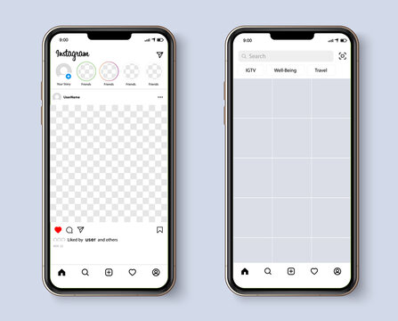

interface de l'application

interface de l'application
: Plateforme axée sur le partage de photos et de vidéos, favorisant la créativité et l'expression visuelle.
: Permet de suivre des comptes, d'interagir via les likes, les commentaires et les messages directs, favorisant les échanges entre utilisateurs.
: Les Stories éphémères et les Reels offrent des formats de contenu courts et divertissants.
: Large éventail de contenus, incluant des influenceurs, des marques, des artistes, des actualités et des contenus éducatifs.
: Filtres créatifs, outils d'édition et de retouche permettant d'améliorer et de personnaliser les publications.
:Pour les entreprises, des options publicitaires ciblées permettent de toucher des audiences spécifiques.
: Intégration de fonctionnalités d'achat directement depuis la plateforme, facilitant le shopping en ligne.
Instagram utilise un algorithme qui ne présente pas toujours les publications dans l'ordre chronologique, ce qui peut frustrer les utilisateurs cherchant un contenu plus récent.
La plateforme peut soulever des préoccupations en matière de confidentialité en raison de la collecte de données importante et des paramètres de confidentialité parfois complexes.
Malgré les efforts pour filtrer le contenu, Instagram peut parfois afficher des images ou des commentaires inappropriés, en particulier en raison de la difficulté à modérer l'énorme quantité de contenu partagé quotidiennement.
Instagram peut encourager une culture de la validation basée sur le nombre de likes, ce qui peut avoir des implications sur la santé mentale des utilisateurs, en particulier les plus jeunes.
Bien que des efforts soient faits pour filtrer le contenu indésirable, certains utilisateurs peuvent contourner ces filtres, exposant ainsi les utilisateurs à des contenus offensants ou nuisibles.
Instagram peut contribuer à une utilisation excessive du temps, affectant la productivité et la santé mentale des utilisateurs qui passent trop de temps sur la plateforme.
La plateforme peut exacerber la pression sociale en mettant en avant des images idéalisées, créant ainsi des attentes irréalistes et contribuant aux problèmes d'estime de soi chez certains utilisateurs.